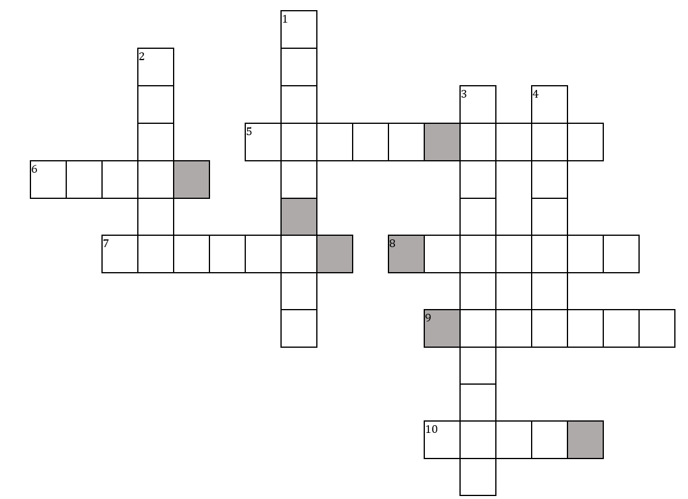

Audio Puzzle
Once you fill in the boxes, take the letters in the grey boxes and form two words which you can attach to your face. Ask us for these articles, and snap a picture and show it to us!
Down
- (1) We might find this rare species in this place, in India(video link)
- (2) Name the movie where this cult scene occurs (audio link)
- (3) Identify the show behind this classic sound (audio link)
- (4) What bird makes this sound?(audio link)
